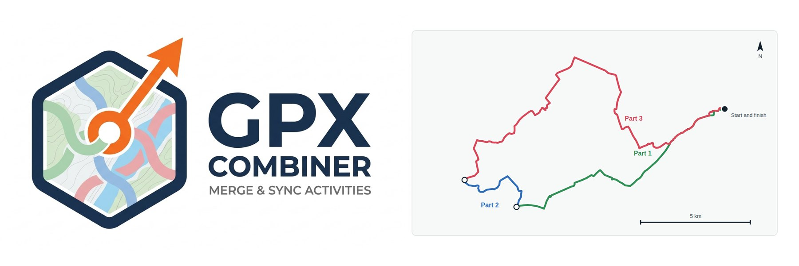
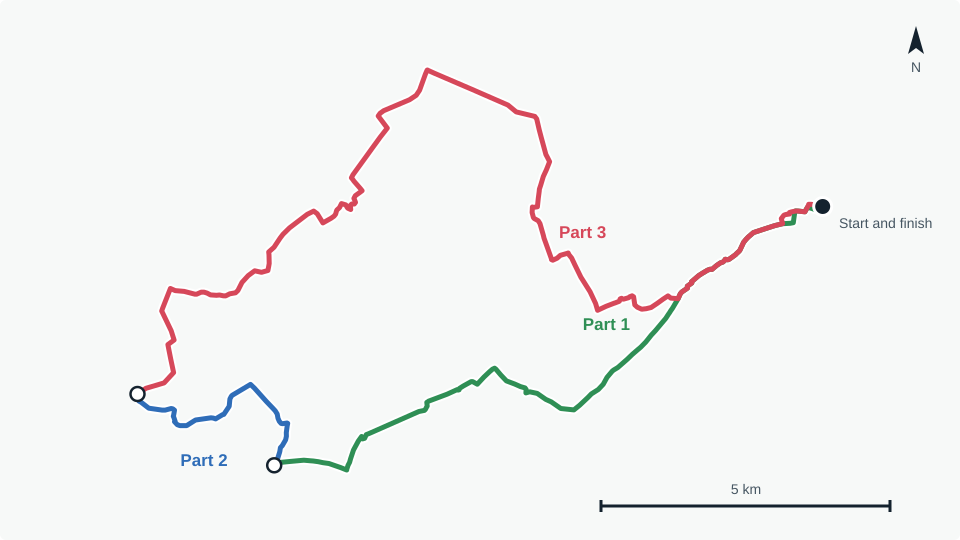
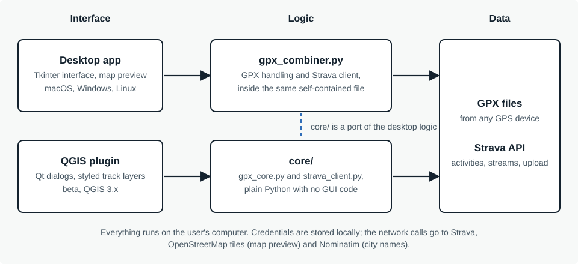

GPX Combiner
Long rides often end up as several GPX files, and Strava's API offers no GPX export. GPX Combiner puts the pieces back together, gets activities out of Strava, previews them on a map and uploads the result, all on your own computer.

The problem
A long ride is often recorded as several GPX files. Putting them back together by hand is fiddly, and Strava’s API does not offer a GPX export, so getting activities out of Strava for the same job is awkward too. I wanted one small tool that does both, runs locally and needs no account beyond Strava’s own.

What it does
- Combines several GPX files into one, in chronological order.
- Imports activities from Strava, with paging, date filtering and each activity’s gear, and downloads them as GPX.
- Uploads the combined file back to Strava and helps avoid duplicates.
- Previews all loaded tracks on an OpenStreetMap map, each in its own colour, with start and finish markers.
- Lets you keep or drop heart rate, cadence, power and temperature.
- Speaks French, English, Spanish and German.
How it is built
The desktop app is a single self-contained Python file of about 2,500 lines. It uses only the standard library, with
Tkinter for the interface; tkinterdnd2 (drag and drop) and certifi (certificates in packaged builds) are optional.
The QGIS plugin reuses the same logic through core/, a host-agnostic port with no GUI code. core/ deliberately does not
save credentials itself: the host does, in a JSON file for the desktop app and in QGIS settings for the plugin. The
trade-off is two copies of the same logic that have to be kept in step.

Decisions worth explaining
Rebuilding GPX from Strava’s data streams
Strava’s API returns activities as streams (time, position, altitude and, when recorded, heart rate, cadence, power and temperature), not as files. The app requests these streams and writes a GPX from them. The extension tags follow the format of Strava’s own exports, so a combined file can be uploaded back and read as if it had been recorded natively.
OAuth without a server of my own
Strava requires every app to be registered. Instead of shipping a shared secret, each user registers their own Strava
application and pastes its ID and secret into the app once. The authorisation response is caught by a tiny web server that
runs on localhost for the length of the login. Credentials stay on the user’s computer and can be erased from the settings window.
Splicing recordings without misleading data
Files are sorted by their first timestamp before they are merged. Some devices, COROS for example, write a cumulative distance for each recording; once two recordings are spliced it becomes wrong, so the app always strips it, while speed and heart rate, which stay valid point by point, are kept.
Not creating duplicates on Strava
When a combined file goes back to Strava, the app checks whether any source file came from an existing Strava activity and offers to open those activities so they can be deleted first. Strava keeps deleted activities recoverable for 30 days.
Shipping it: macOS and Windows builds
The app is packaged with py2app for macOS and PyInstaller for Windows, and published as GitHub releases. Packaging is where
hidden assumptions surfaced. A packaged app cannot reach the system certificate store, so Strava calls failed with SSL errors
until I bundled certifi. The builds are unsigned, which is why the README walks through the Gatekeeper and SmartScreen prompts.
A responsive interface
The activity list shows the city each ride started near. That needs reverse geocoding with OpenStreetMap’s Nominatim service, limited to one request per second by its usage policy. It runs in the background and results are cached, so the table never freezes while it waits.
A plugin that declines to install where it is untested
The plugin’s metadata caps the supported QGIS version at 3.99. QGIS 4 will not offer it until I have tested it there.
What I learned
Packaging is its own problem. Certificates in a bundled app, Tk on a Homebrew Python, an icon that only appeared on the Windows executable: none of it shows up when you run the script from a terminal.
Constraints shape the design. No GPX export meant rebuilding files from streams. Strava’s registration rule meant a local callback server and per-user credentials. Working around what an API does not do took more thought than calling what it does.
Sharing logic between two hosts forces clear boundaries. Deciding that core/ never touches the disk or the interface,
and that each host owns its own persistence, is what made the plugin possible.
Version numbers and changelogs pay off. The version is in the window title, and the plugin shows its own version, so I can tell at a glance which install I am looking at.
How I worked. I built this with an AI coding assistant. I defined the behaviour, tested every build against real files and real Strava data, chose the packaging and the architecture, and decided what shipped. The assistant did most of the typing.
What comes next
- QGIS 4 support, once the plugin is out of beta and better tested on QGIS 3.
- Full paging and date filtering in the plugin’s Strava import, matching the desktop app.
- Publication in the official QGIS Plugin Repository.
- Checking the plugin on Windows and Linux.